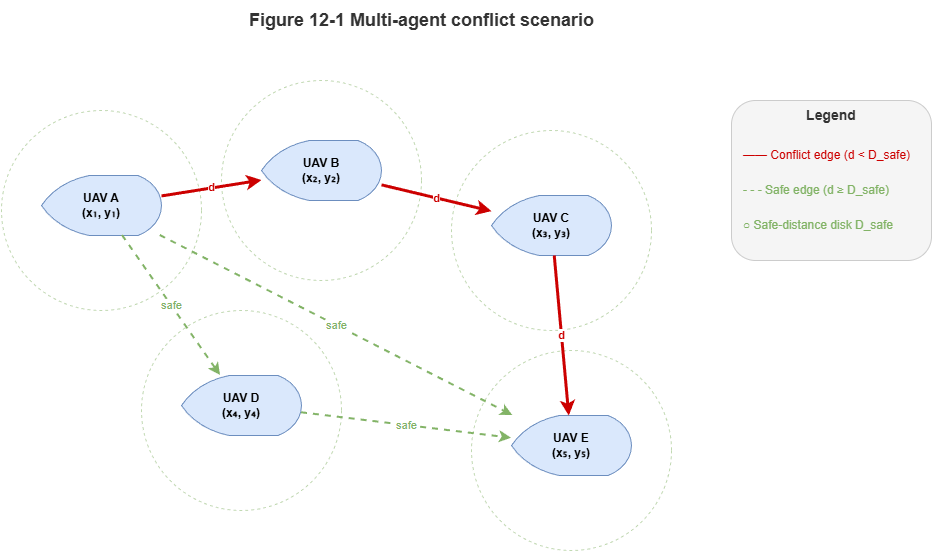
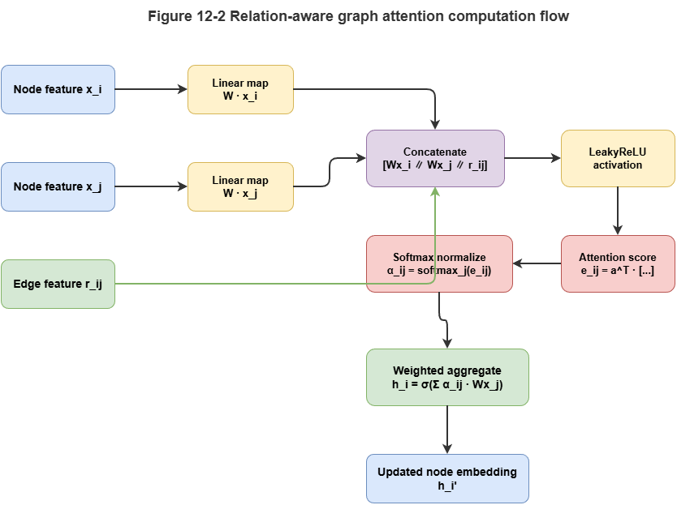
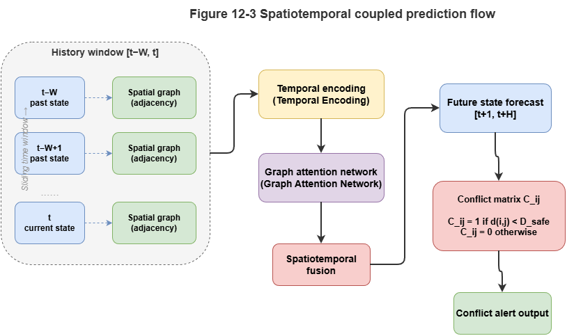

Chapter 11 showed how TKGs supply an evolving substrate for high-frequency UAM. Expressing dynamics is only the first step; anticipating danger in a volatile network is the safety core. Following Part 7’s Layer 3: deep fusion, this chapter deploys graph neural networks (GNNs) directly on TKGs for multi-agent conflict detection—strong spatial perception with low latency, moving from passive response to proactive warning.
12.1 Formalizing multi-UAV dynamic coordination#
Multi-UAV deconfliction is spatiotemporal sequence prediction and classification. We first state the problem on graphs, then relate relation-aware message passing, temporal encoding, and spatiotemporal coupling to real-time conflict detection.
Over window \(T\), let \(N\) active aircraft (dynamic TKG entities) form \(\mathcal{V} = \{v_1, v_2, \dots, v_N\}\). Each UAV \(v_i\) at time \(t\) has features \(x_i^{(t)}\)—coordinates \((lon, lat, alt)\), velocity, heading, and static TKG attributes (e.g., size class, mission priority).
For any pair \(v_i, v_j\), define conflict if Euclidean (or protected-volume) distance at some future time \(t+\Delta t\) falls below minimum separation \(D_{safe}\):
The model learns \(f_\theta\) from historical graph snapshots \(\mathcal{G}^{(t-H:t)}\) to output conflict probabilities \(\hat{C}\) over a prediction horizon.
12.2 Graph attention and relation-aware message passing#
In dense swarms, many neighbors coexist; threat is heterogeneous. Plain MLPs or uniform GCN aggregation blur critical interactions. Use graph attention (GAT).
Bind attention to TKG relation semantics—relation-aware message passing:
\(r_{ij}^{(t)}\) encodes edge features (e.g., relative velocity, corridor topology). Coefficients \(\alpha_{ij}^{(t)}\) upweight closing head-on pairs and downweight nearby parallel traffic—sharper focus in cluttered airspace.
12.3 Temporal encoding and obsolete-edge discounting#
TKG streams suffer delay, loss, and asynchronous sampling—neighbor states may lag. Add temporal encoding and obsolete-edge discounting:
Temporal encoding: Map timestamp skew \(\Delta t\) to continuous features encoding freshness.
Discounting: Modulate attention with exponential decay in lag:
Stale updates contribute less—robustness under lossy links. Parameter \(\gamma\) controls decay rate.
12.4 Spatiotemporal coupled conflict prediction#
Spatiotemporal coupling joins spatial GNN layers with temporal sequence models (GRU, Transformer).
Spatial–temporal cascade:
Spatial aggregation: On each snapshot, stacked relation-aware GAT yields hidden states \(h_i^{(t)}\) fusing local interaction.
Temporal roll-out: Feed sequences \([h_i^{(t-H)}, \dots, h_i^{(t)}]\) to a seq2seq-style module producing future hiddens \([\hat{h}_i^{(t+1)}, \dots, \hat{h}_i^{(t+F)}]\).
Conflict scoring: MLP on predicted features yields pairwise collision probabilities.
12.5 Real-time metrics: latency, throughput, stability#
Safety systems must be fast as well as accurate. On city-scale cloud–edge substrates:
Latency: End-to-end from telemetry ingest / TKG update to conflict matrix—often < 100 ms targets in low-altitude settings.
Throughput: Updates per second across concurrent trajectories or quadruples—city engines may need tens of thousands of concurrent streams.
Stability: Low jitter under traffic spikes—usually via local graph slicing, activating subgraphs around active dynamic events.
12.6 Accuracy metrics: CDR, FAR, F1, warning timeliness#
Beyond generic ML scores, use domain metrics:
Conflict detection rate (CDR / recall): Fraction of true conflicts warned—misses are unacceptable; CDR should approach 100%.
False alarm rate (FAR): Fraction of alarms that are false—high FAR erodes trust and efficiency (“cry wolf”).
F1-score: Harmonic balance of CDR and precision/FAR trade-offs.
Warning timeliness: Lead time (time-to-conflict, TTC) for successful detections—more margin improves downstream deconfliction.
12.7 From prediction to intervention: dynamic risk scores and prioritization#
Probabilistic forecasts are only the first governance step. In multi-encounter settings (e.g., three-way merges), the system must decide who yields.
Re-engage SkyKG rule layers: compute dynamic risk scores per entity and rank by priority rules from regulation and operations.
Example priorities: medevac > passenger eVTOL > routine logistics; dynamic modifiers: e.g., very low battery (<15%) may raise landing priority.
Map high-risk GNN nodes back to ontology nodes, fuse with symbolic priorities, and derive yield responsibility weights—inputs to rerouting and control, bridging deep prediction to symbolic intervention. The next chapter expands cooperative deconfliction and decision-making.
Chapter summary#
We defined multi-agent conflict detection on TKG snapshots; relation-aware GAT focuses true threats; temporal encoding and obsolete-edge discounting handle stale/async telemetry; spatiotemporal cascades forecast conflicts; real-time and domain-specific metrics characterize deployment; dynamic risk scoring and priority mapping reconnect predictions to rule layers for downstream deconfliction.
Key concepts#
Conflict detection model: Dynamic graph model forecasting unsafe spatiotemporal relations.
Relation-aware message passing: Aggregation using edge features and relation semantics.
Obsolete-edge discounting: Down-weighting stale states by temporal lag.
Spatiotemporal coupled prediction: Joint spatial interaction and temporal evolution.
Dynamic risk score: Risk fused with mission context, rules, and priorities.
Study questions#
Why does uniform aggregation often fail in dense multi-agent airspace compared with relation-aware attention?
What problems do temporal encoding and obsolete-edge discounting solve—are they interchangeable?
Why should conflict outputs connect to rules and priorities, not stop at probability matrices?
Case study#
Peak-hour three-way crossing: three priority-different aircraft approach a corridor junction—model outputs conflict probabilities, warning lead times, and yield ordering using relative speeds, mission types, and edge freshness.
Figure suggestions#
Figure 12-1: Graph view of the multi-agent conflict-detection problem.

Figure 12-2: Relation-aware graph attention computation flow.

Figure 12-3: Spatiotemporal cascade from history window to future conflict matrix.

Formula index#
Conflict indicator: \(C_{ij}^{(t+\Delta t)} = \mathbf{1}\!\left[\|p_i^{(t+\Delta t)} - p_j^{(t+\Delta t)}\| < D_{\mathrm{safe}}\right]\)
Attention logits: \(e_{ij}^{(t)} = \mathrm{LeakyReLU}\!\left(\mathbf{a}^\top [W x_i \| W x_j \| r_{ij}]\right)\)
Normalized attention: \(\alpha_{ij}^{(t)} = \dfrac{\exp(e_{ij})}{\sum_k \exp(e_{ik})}\)
Obsolete-edge discount: \(\tilde{\alpha}_{ij}^{(t)} = \alpha_{ij}^{(t)} \cdot \exp(-\gamma\,\Delta t_{ij})\)
References#
Veličković, P., Cucurull, G., Casanova, A., Romero, A., Liò, P., & Bengio, Y. (2018). Graph Attention Networks. International Conference on Learning Representations (ICLR).
Kipf, T. N., & Welling, M. (2017). Semi-Supervised Classification with Graph Convolutional Networks. International Conference on Learning Representations (ICLR).
Schlichtkrull, M., Kipf, T. N., Bloem, P., van den Berg, R., Titov, I., & Welling, M. (2018). Modeling Relational Data with Graph Convolutional Networks. Proceedings of the European Semantic Web Conference (ESWC).
Li, Y., Yu, R., Shahabi, C., & Liu, Y. (2018). Diffusion Convolutional Recurrent Neural Network: Data-Driven Traffic Forecasting. International Conference on Learning Representations (ICLR).
Yu, B., Yin, H., & Zhu, Z. (2018). Spatio-Temporal Graph Convolutional Networks: A Deep Learning Framework for Traffic Flow Forecasting. Proceedings of the 27th International Joint Conference on Artificial Intelligence (IJCAI).
Wu, Z., Pan, S., Chen, F., Long, G., Zhang, C., & Yu, P. S. (2021). A Comprehensive Survey on Graph Neural Networks. IEEE Transactions on Neural Networks and Learning Systems, 32(1), 4–24.